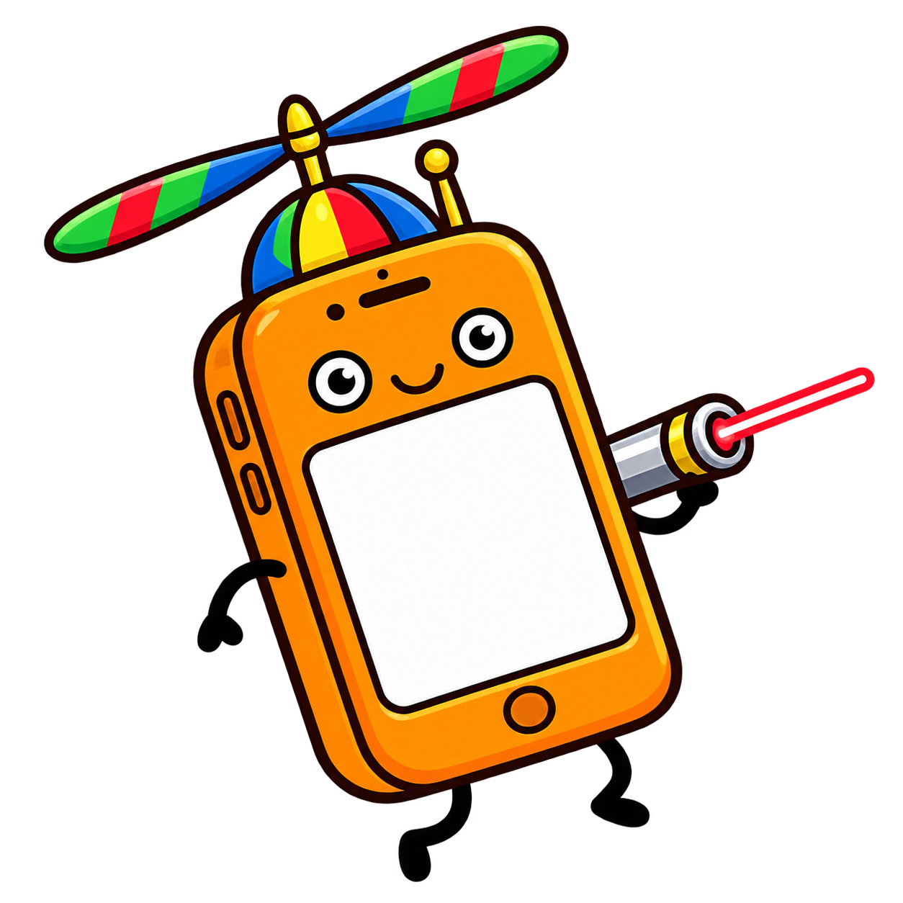

Start the server to see the pairing QR code
Stopped
Start Server
Connect your phone to the same Wi‑Fi network
Scan the QR code or enter the URL manually
Accept the self‑signed certificate warning
Grant motion permission when prompted
Allow Accessibility access in System Settings
Tap
Calibrate
while pointing at the cursor
How to fly?